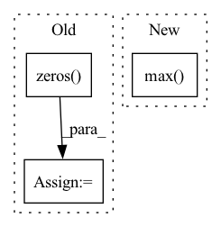

Pattern ID :20093
Before Change
def _fast_rcnn_loc_loss(pred_loc, gt_loc, gt_label, sigma):
in_weight = torch.zeros( gt_loc.shape)
in_weight[(gt_label > 0).view(-1, 1).expand_as(in_weight)] = 1
if pred_loc.is_cuda:
gt_loc = gt_loc.cuda()
in_weight = in_weight.cuda()
// smooth_l1损失函数
loc_loss = _smooth_l1_loss(pred_loc, gt_loc, in_weight.detach(), sigma)
// 进行标准化After Change
loc_loss = _smooth_l1_loss(pred_loc, gt_loc, sigma)
num_pos = (gt_label > 0).sum().float()
loc_loss /= torch.max( num_pos, torch.ones_like(num_pos))
return loc_loss
In pattern: SUPERPATTERN
Frequency: 4
Non-data size: 3
Instances Fragment ID: 65776938
Project Name: bubbliiiing/faster-rcnn-pytorch
Commit Name: d456f02a402fd8cf8db1d991aa612439b3c0ffb2
Time: 2021-01-30
Author: 47347516+bubbliiiing@users.noreply.github.com
File Name: trainer.py
M Class Name: AnonimousClass
N Class Name: AnonimousClass
M Method Name: _fast_rcnn_loc_loss(4)
N Method Name: _fast_rcnn_loc_loss(4)
M Parent Class:
N Parent Class:
M File Name: trainer.py
N File Name: trainer.py
M Start Line: 142
M End Line: 151
N Start Line: 138
N End Line: 143
Before Change
def fools_gold_score(grad_list):
n_clients = len(grad_list)
grads = [utils.vectorize_weight(grad) for grad in grad_list]
cs = np.zeros( (n_clients, n_clients))
for i in range(n_clients):
for j in range(n_clients):
cs[i][j] = 1 - spatial.distance.cosine(
grads[i].tolist(), grads[j].tolist()After Change
print("alpha (after) = {}".format(cs))
// Rescale so that max value is alpha
print(np.max( alpha) )
alpha = alpha / np.max(alpha)
print("alpha_xxx = {}".format(alpha))
alpha[(alpha == 1.0)] = 0.99 Fragment ID: 65776936
Project Name: fedml-ai/fedml
Commit Name: 7a9a87eb07ec4ad218af6a18663cb93b061d735a
Time: 2022-09-22
Author: chaoyanghe.com@gmail.com
File Name: python/fedml/core/security/defense/foolsgold_defense.py
M Class Name: FoolsGoldDefense
N Class Name: FoolsGoldDefense
M Method Name: fools_gold_score(1)
N Method Name: fools_gold_score(1)
M Parent Class: BaseDefenseMethod
N Parent Class: BaseDefenseMethod
M File Name: python/fedml/core/security/defense/foolsgold_defense.py
N File Name: python/fedml/core/security/defense/foolsgold_defense.py
M Start Line: 67
M End Line: 75
N Start Line: 70
N End Line: 99
Before Change
edges_to_remove = edges_to_remove.to(edge_index)
// it"s not intuitive to remove edges from a graph represented as `edge_index`
edge_weight_remove = torch.zeros( edges_to_remove.size(1)) - 1e5
edge_weight = torch.cat(
[torch.ones(edge_index.size(1)), edge_weight_remove], dim=0)
edge_index = torch.cat([edge_index, edges_to_remove], dim=1).cpu().numpy()After Change
[edges_to_remove, edges_to_remove.flip(0)], dim=1)
edges_to_remove = edges_to_remove.to(edge_index)
num_nodes = max(edge_index.max() .item(), edges_to_remove.max().item()) + 1
adj_matrix = to_scipy_sparse_matrix(edge_index, num_nodes=num_nodes).tocsr(copy=False)
row, col = edges_to_remove.cpu().numpy() Fragment ID: 65776943
Project Name: edisonleeeee/greatx
Commit Name: 5636c287ad7cc91164e629bd7b8b1da3afdfc2a7
Time: 2022-07-29
Author: cnljt@outlook.com
File Name: greatx/utils/modification.py
M Class Name: AnonimousClass
N Class Name: AnonimousClass
M Method Name: remove_edges(3)
N Method Name: remove_edges(3)
M Parent Class:
N Parent Class:
M File Name: greatx/utils/modification.py
N File Name: greatx/utils/modification.py
M Start Line: 61
M End Line: 70
N Start Line: 59
N End Line: 78